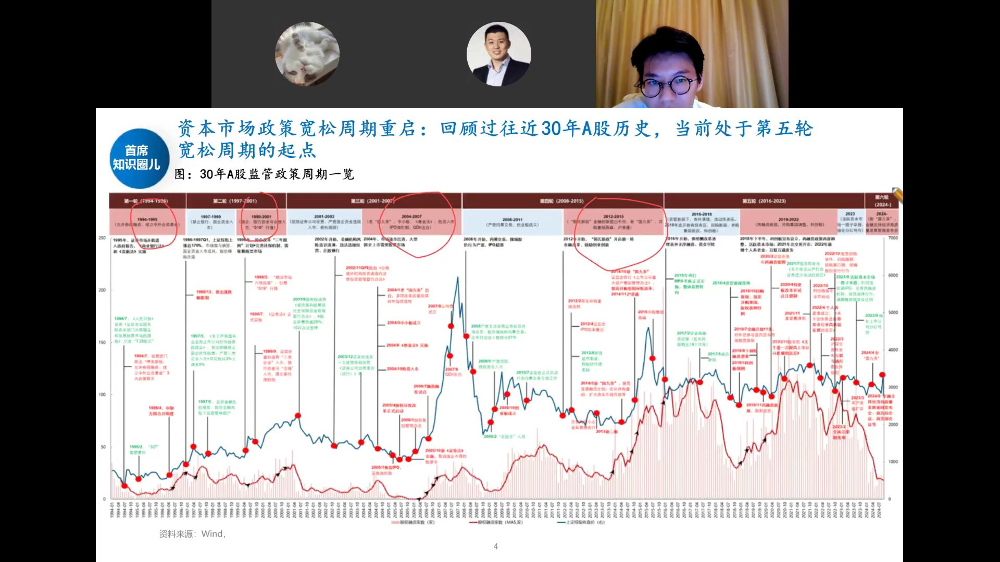
邓玉林开篇回顾近30年A股监管政策周期：历史上共经历五轮政策宽松周期（1994-1995、1999-2001、2005-2007、2012-2015、2019-2022），每轮宽松周期都对应一轮大级别行情。当前（2024年）正处于第五轮宽松周期重启的起点——9·24政策组合拳标志着资本市场政策宽松周期的正式开启。
历史规律：政策宽松周期重启往往对应市场底部区域。回顾历次政策底到市场底的传导，本轮9·24政策密度和力度均为历史级别。
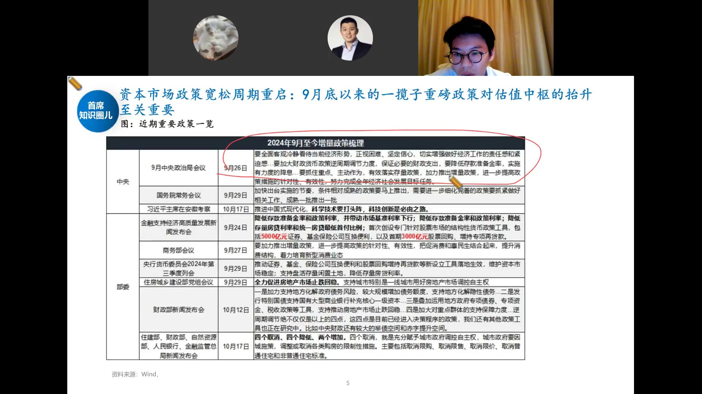
邓玉林梳理了9月24日至10月中旬的全部增量政策：
这一揽子重磅政策对估值中枢的抬升至关重要。特别是首次创设针对股票市场的结构性货币政策工具，是历史上没有过的。
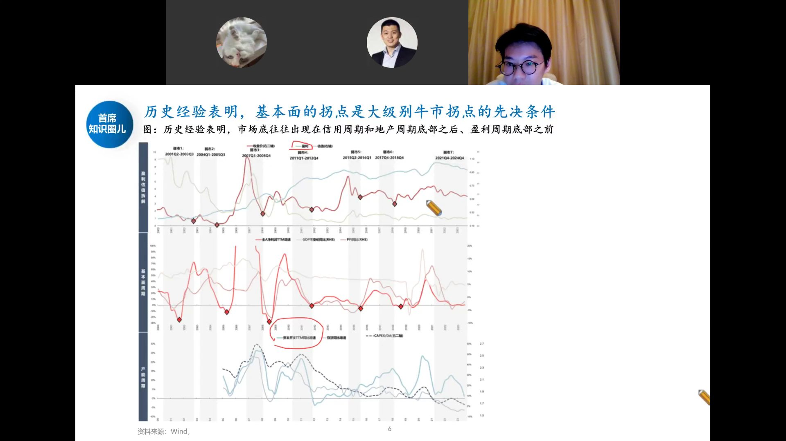
邓玉林指出，历史经验表明，大级别牛市的拐点需要基本面拐点作为先决条件。市场底往往出现在：
图中标注了七轮牛市起点（2001Q2、2004Q1、2007Q1、2011Q1、2015Q2、2017Q4、2021Q4），每一轮牛市启动时，全A非金融两油的盈利TTM同比均处于底部区域。当前盈利周期仍在磨底，但已出现拐点迹象。
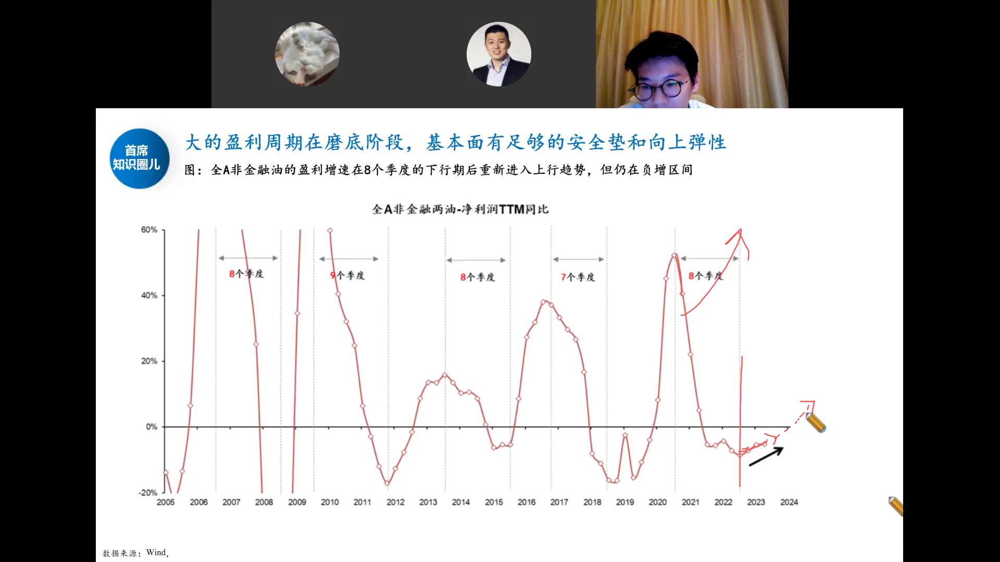
全A非金融两油的盈利增速在经历8个季度的下行期后，重新进入上行趋势，但仍在负增区间。历史上每轮盈利下行期持续7—9个季度（图中标注8个、9个、8个、7个、8个季度），本轮已持续8个季度，时间维度接近尾声。
大的盈利周期在磨底阶段，基本面有足够的安全垫和向上弹性。一旦PPI翻正、企业利润转正，盈利弹性将带动估值与盈利双升。
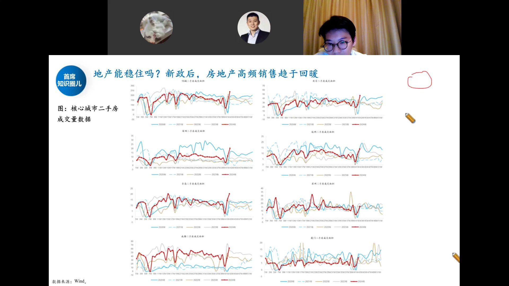
新政后房地产高频销售趋于回暖。从15城、北京、深圳、杭州、青岛、苏州、成都、厦门等核心城市二手房成交面积看，2024年（红线）在9月新政后出现明显脉冲式回升。
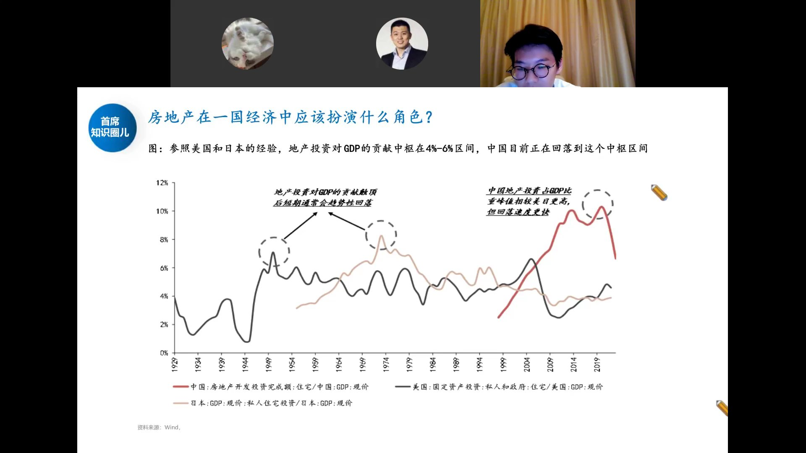
参照美国和日本的长期经验，地产投资对GDP的贡献中枢在4%—6%区间。中国地产投资占GDP比重峰值相较美日更高（达10%以上），但回落速度更快，目前正在向4%—6%的中枢区间回归。
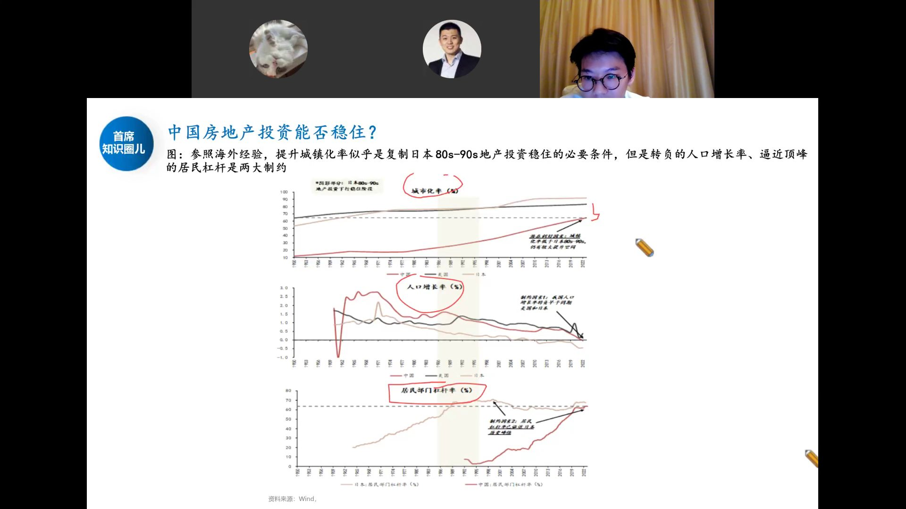
提升城镇化率似乎是复制日本80s—90s地产投资稳住的必要条件，但两大制约：①中国人口增长率转负，早于同期美日；②居民部门杠杆率已接近日本历史峰值。这意味着地产投资难以复制日本当年的"稳住"路径。
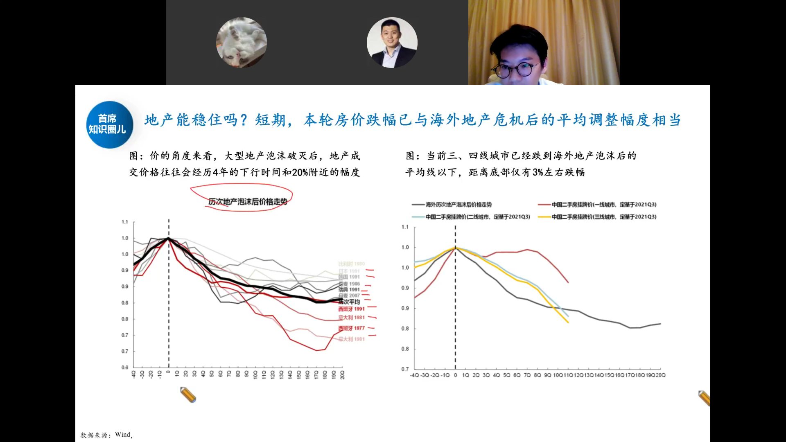
从"价"的角度：大型地产泡沫破灭后，成交价格往往经历约4年下行、20%附近跌幅。当前三四线城市已经跌到海外地产泡沫后的平均线以下，距离底部仅有约3%左右跌幅。短期本轮房价跌幅已与海外地产危机后的平均调整幅度相当。
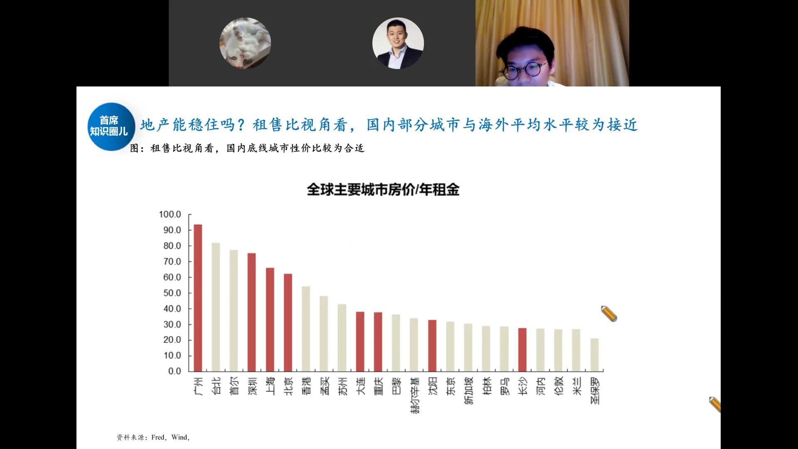
从租售比视角看，全球主要城市房价/年租金排名中，广州（94年）、台北（82年）、首尔（77年）、深圳（75年）、上海（66年）、北京（62年）位居前列；而大连（38年）、重庆（38年）、沈阳（33年）、长沙（28年）已与海外平均水平接近。国内底线城市性价比已较为合适。
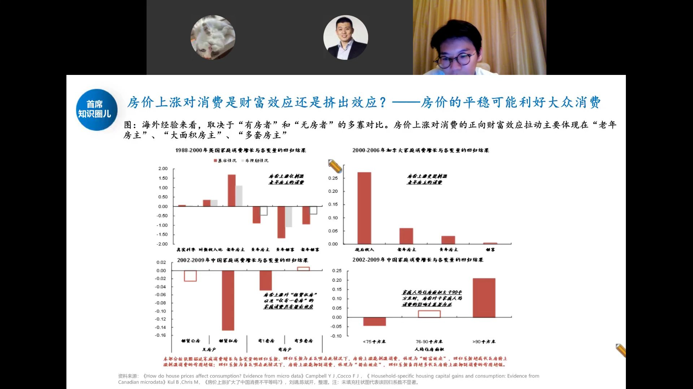
海外经验表明，房价上涨对消费的影响取决于"有房者"和"无房者"的多寡对比：正向财富效应主要体现在"老年房主""大面积房主""多套房住"；而对"租赁私房""仅有一套房"的家庭，房价上涨反而是挤出效应。中国数据显示，人均住房面积大于90平方米时，房价对消费才有显著正向影响。
结论：房价平稳（而非继续大涨）可能利好大众消费——避免继续挤出无房者和刚需群体的消费能力。
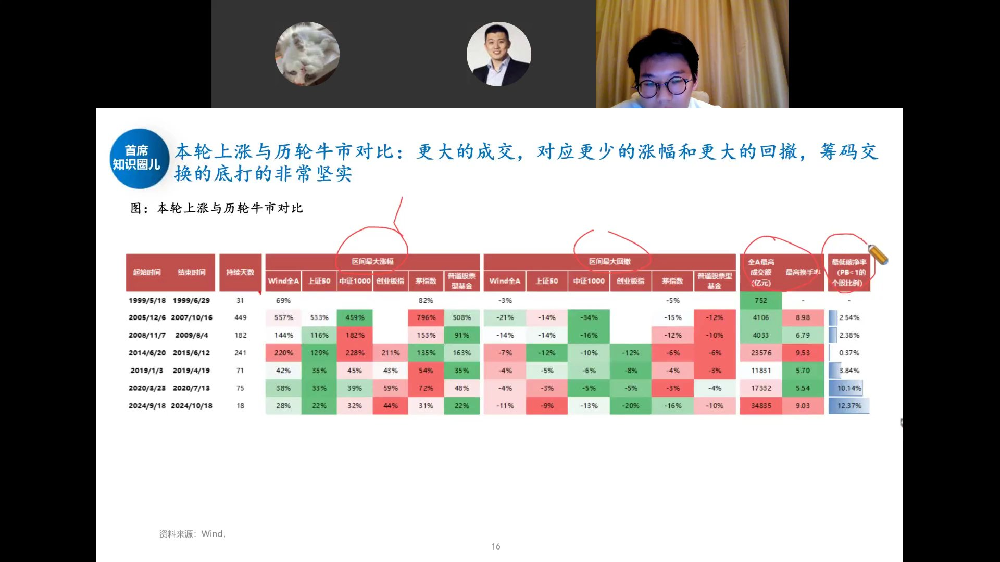
邓玉林将2024/9/18—10/18的18天行情与历轮牛市对比：
更大的成交对应更少的涨幅和更大的回撤，说明筹码交换非常充分，底部打得非常坚实。这不是一轮缩量拉升的虚火行情。
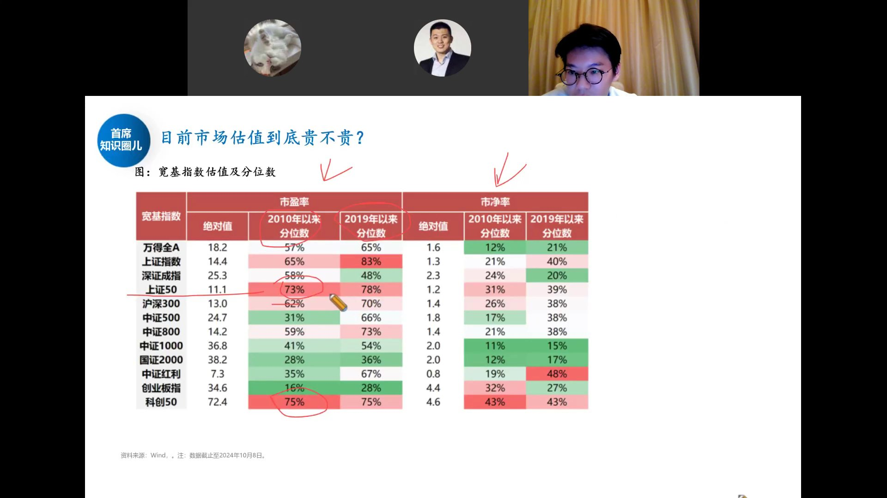
截至2024年10月8日：万得全A PE 18.2倍（2010年以来57%分位），上证50 PE 11.1倍（73%分位），科创50 PE 72.4倍（75%分位）。部分指数（上证50、科创50）分位数已不低，但中证1000 PE 36.8倍仅41%分位、PB仅15%分位。
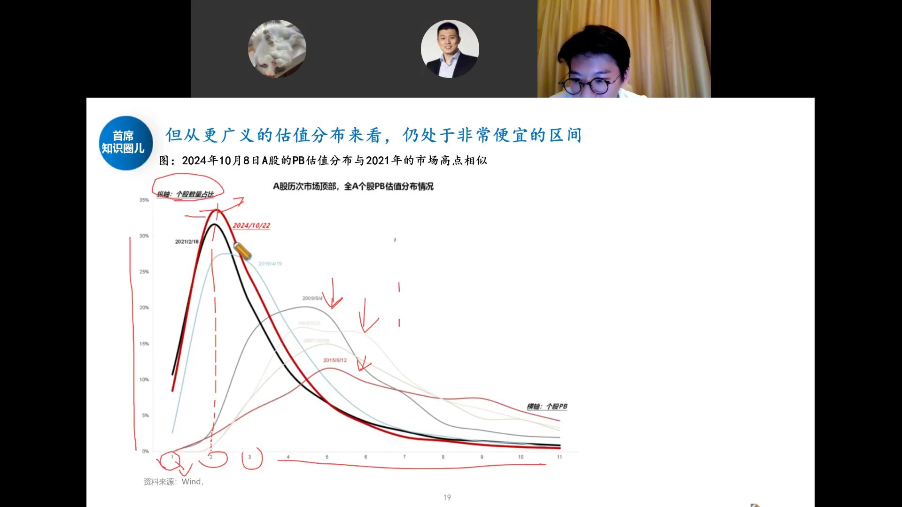
但从更广义的PB估值分布来看，2024年10月8日A股个股PB分布仍与2021年2月市场高点相似——即大量个股仍集中在低PB区间。与2007年、2015年、2018年的顶部分布相比，当前估值分布仍处于非常便宜的区间。
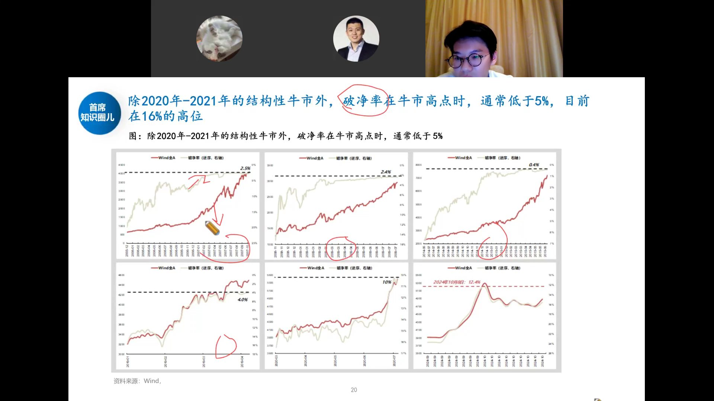
除2020—2021年结构性牛市外，历史上每轮牛市高点时破净率（PB<1个股占比）通常低于5%（2007年2.5%、2009年2.4%、2015年0.4%、2019年4.0%）。而当前破净率高达12.4%——这意味着从破净率角度看，市场远未到牛市顶部。
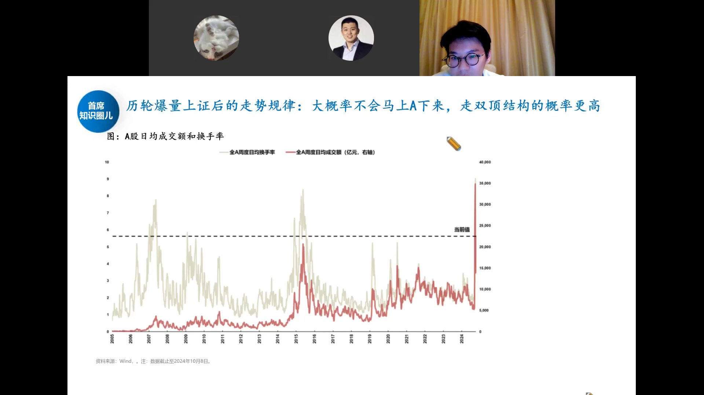
9月以来A股周度日均成交额和换手率飙升至历史高位（红线当前值对应3.5万亿成交、9%换手率）。邓玉林指出：历轮爆量上证后，大概率不会马上A字下来，走双顶结构的概率更高。
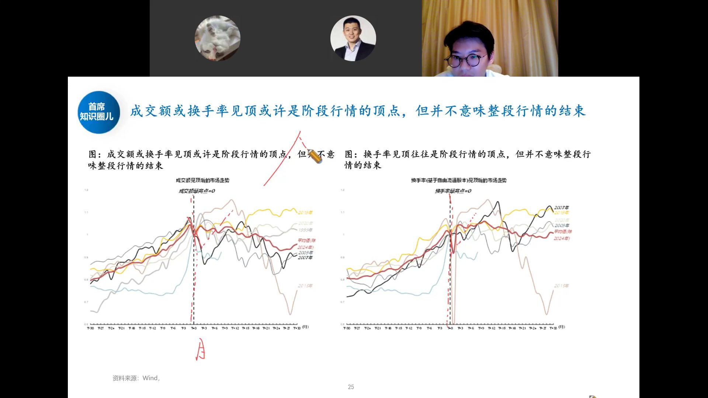
将历次成交额/换手率最高点归一化为T=0，观察后续走势：成交额见顶或许是阶段行情的顶点，但并不意味整段行情的结束。换手率见顶后，市场往往经历1—3个月震荡消化，随后仍有第二波上行（双顶结构）。
10月8日3.5万亿天量后，市场经历了快速回调（最大回撤约11%），但从历史规律看，这更像是第一阶段冲高后的消化，而非牛市终结。
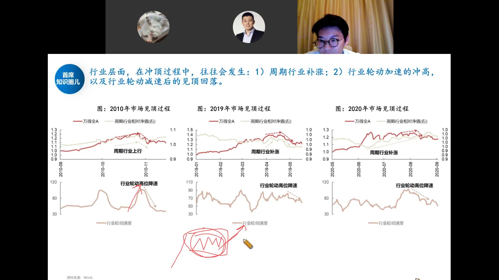
回顾2010年、2019年、2020年三轮市场见顶过程，行业层面往往发生两个现象：①周期行业补涨；②行业轮动加速冲高后、轮动减速时见顶回落。当前这两个信号尚未出现。
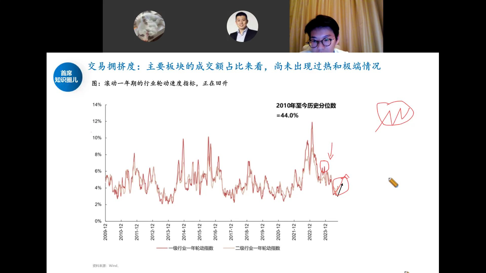
从交易拥挤度看，主要板块的成交额占比尚未出现过热和极端情况。滚动一年期行业轮动速度指标当前处于44%历史分位，正在从低位回升——说明行业轮动刚刚开始加速，远未到"轮动减速后见顶"的阶段。
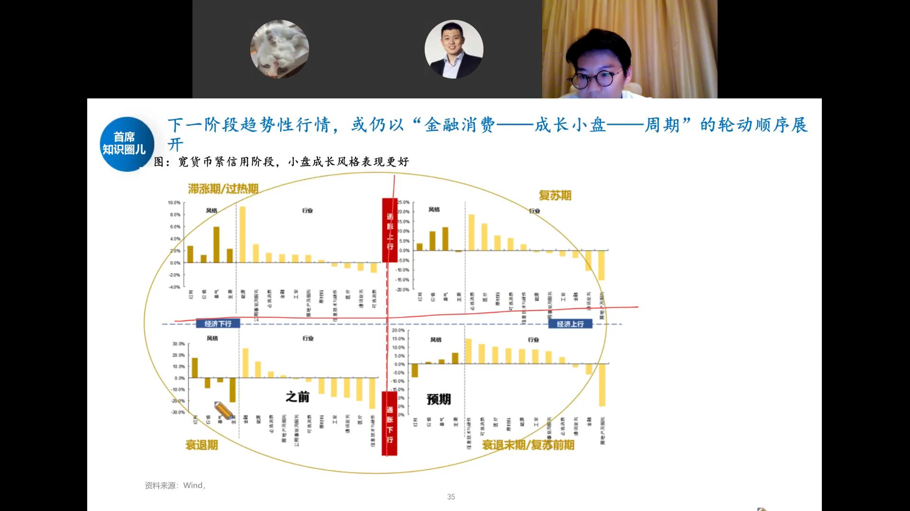
邓玉林用经济周期四象限框架（滞胀期/过热期/复苏期/衰退末期）判断：下一阶段趋势性行情或仍以"金融消费——成长小盘——周期"的轮动顺序展开。
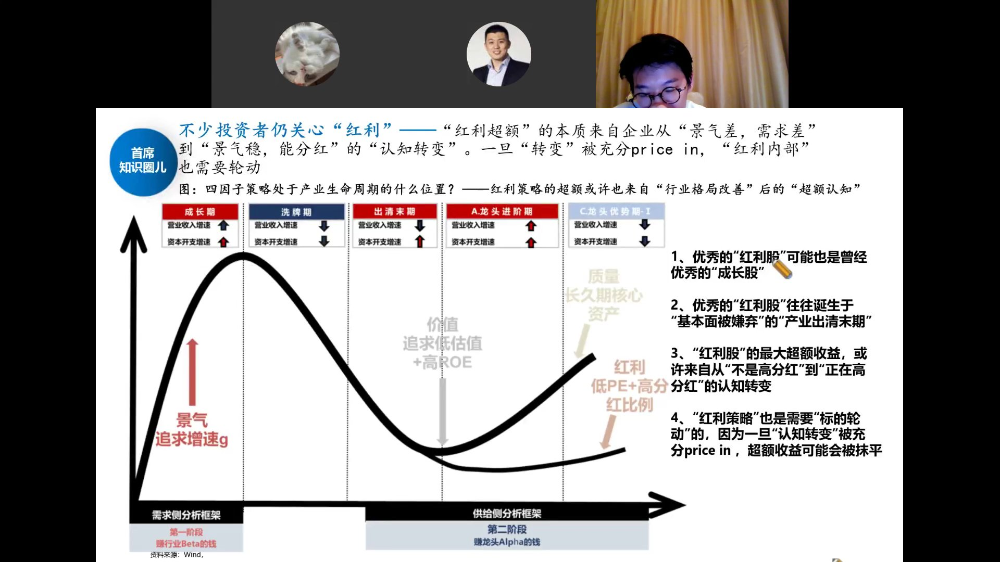
针对投资者最关心的"红利"问题，邓玉林用产业生命周期框架剖析：
"红利超额"的本质来自企业从"景气差、需求差"到"景气稳、能分红"的认知转变。一旦转变被充分price in，红利内部也需要轮动——不能 static 地持有某几只红利股。
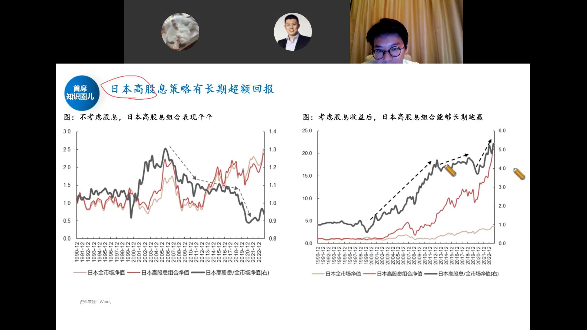
日本经验：不考虑股息，日本高股息组合表现平平（甚至跑输全市场）；但考虑股息收益后，日本高股息组合能够长期跑赢全市场——从1990年至今年化超额约4%—5%，且呈现阶梯式上行。
这说明红利策略的超额收益主要来自股息再投资的复利效应，而非资本利得。中国当前处于类似日本90年代后期的低利率环境，高股息策略的长期配置价值正在显现。
中期看，市场或重新开始一轮基本面修复的风格轮动。9·24政策组合拳开启了第五轮宽松周期，盈利周期磨底接近尾声，地产向4%—6%GDP中枢回归，估值分布仍便宜，成交规律指向双顶而非A字顶。配置上沿"金融消费→成长小盘→周期"顺序轮动，红利内部也需动态切换。